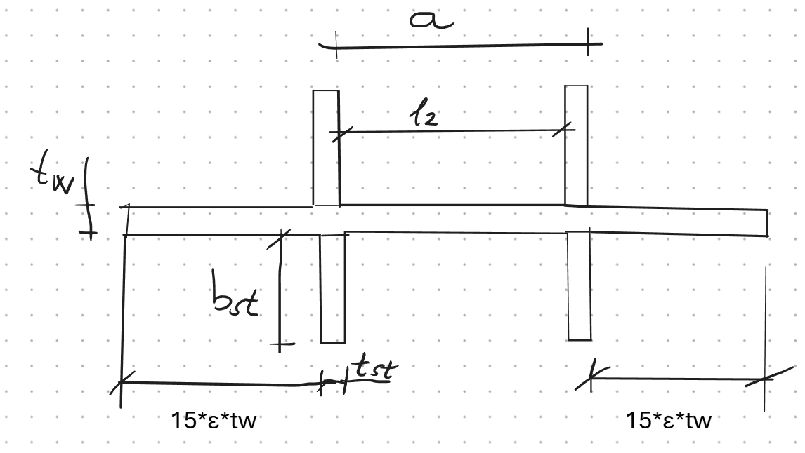

Transversal Forces - Stiffened Web Calculator
Calculate capacity of transversally stiffened webs with detailed step-by-step derivations
Model Geometry

Geometry and nomenclature for transversal forces in stiffened webs
Calculate capacity of transversally stiffened webs with detailed step-by-step derivations
Geometry and nomenclature for transversal forces in stiffened webs